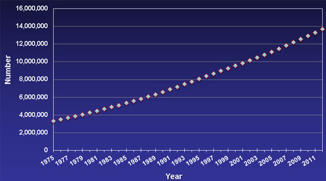
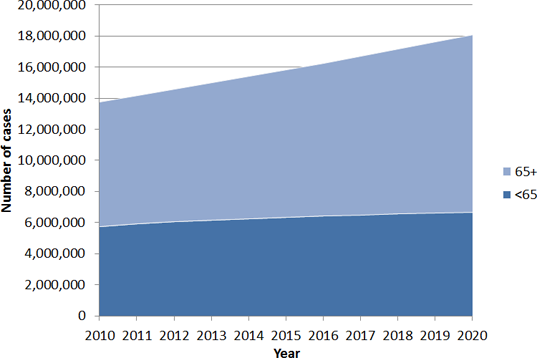
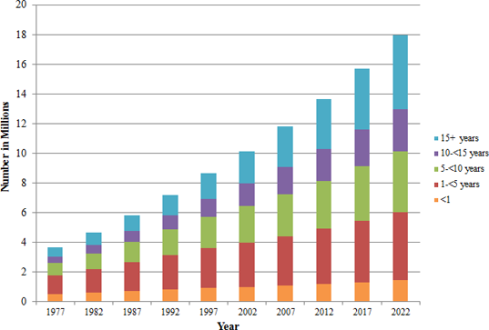
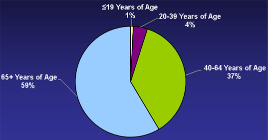
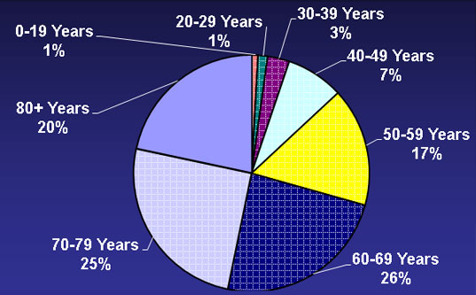
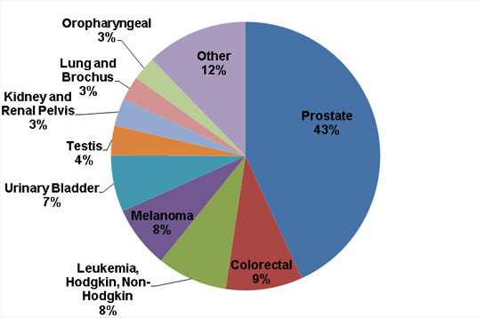
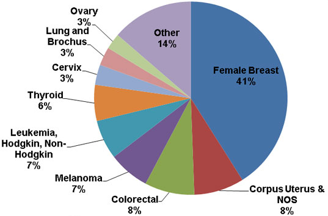
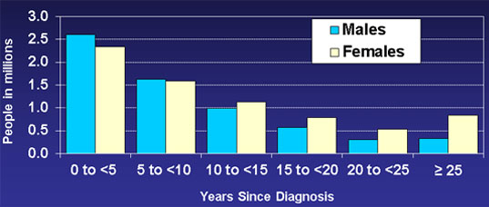
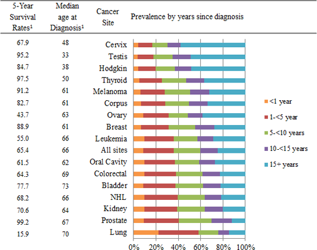
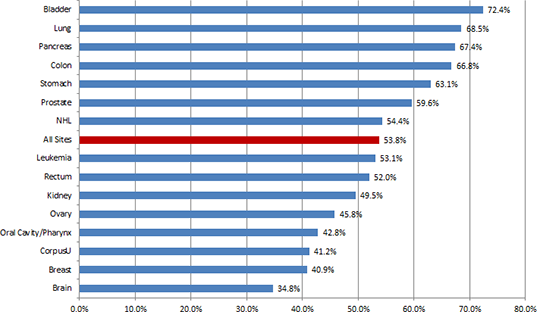

Estimated US Cancer Prevalence Counts: Method
On this page:
- Estimated Number of Cancer Survivors Over Time
- United States cancer prevalence projections (2010-2020)
- Estimated and projected number cancer survivors in the United States from 1977-2022 by years since diagnosis
- Prevalence by Survivor’s Current Age
- Prevalence by Cancer Site
- Prevalence by Time Since Diagnosis and Gender
- Estimated number of cancer survivors in the United States as of January 1, 2012 by cancer site and years from diagnosis
- Incidence (%) of Tumors Diagnosed in Individuals age ≥ 65
Estimated Number of Cancer Survivors in the United States From 1975 to 2012
 [D]
Estimations and modeling provided by Angela Mariotto, PhD, based on: Mariotto AB, Yabroff KR, Shao Y, Feuer EJ, Brown ML. Projections of the cost of cancer care in the United States: 2010-2020. J Natl Cancer Inst. 2011 Jan 19;103(2):117-28. Epub 2011 Jan 12
United States cancer prevalence projections (2010-2020)

Parry C, Kent EE, Mariotto AB, Alfano C, Rowland JH. Cancer survivors: a booming population. Cancer Epidemiology Biomarkers & Prevention 2011;20:1996-2005.
Estimated and projected number cancer survivors in the United States from 1977-2022 by years since diagnosis

de Moor JS, Mariotto AB, Parry C, Alfano CM, Padgett L, Kent EE, Forsythe L, Scoppa S, Hachey M, and Rowland JH. Cancer Survivors in the United States: Prevalence across the Survivorship Trajectory and Implications for Care. Cancer Epidemiol Biomarkers Prev. 2013 Apr;22(4):561-70. doi: 10.1158/1055-9965.EPI-12-1356. Epub 2013 Mar 27.
Estimated Number of Persons Alive in the U.S. Who Were Diagnosed With Cancer
by Current Age
(as of January 1, 2012)
(Invasive/1st Primary Cases Only, N = 13.7 M survivors)
 [D]
Estimations and modeling provided by Angela Mariotto, PhD, based on: Mariotto AB, Yabroff KR, Shao Y, Feuer EJ, Brown ML. Projections of the cost of cancer care in the United States: 2010-2020. J Natl Cancer Inst. 2011 Jan 19;103(2):117-28. Epub 2011 Jan 12.
Estimated Number of Persons Alive in the U.S. Who Were Diagnosed With Cancer
by Current Age – More Detail
(as of January 1, 2012)
(Invasive/1st Primary Cases Only, N = 13.7 M survivors)
 [D]
Estimations and modeling provided by Angela Mariotto, PhD, based on: Mariotto AB, Yabroff KR, Shao Y, Feuer EJ, Brown ML. Projections of the cost of cancer care in the United States: 2010-2020. J Natl Cancer Inst. 2011 Jan 19;103(2):117-28. Epub 2011 Jan 12.
Estimated Number of Persons Alive in the U.S. Who Were Diagnosed With Cancer
by Site (N = 13.7 M)
(as of January 1, 2012)
 [D]
[D]
Estimations and modeling provided by Angela Mariotto, PhD, based on: Mariotto AB, Yabroff KR, Shao Y, Feuer EJ, Brown ML. Projections of the cost of cancer care in the United States: 2010-2020. J Natl Cancer Inst. 2011 Jan 19;103(2):117-28. Epub 2011 Jan 12.
Estimated Number of Male Cancer Survivors in the U.S.
by Site (as of January 1, 2012)
(Invasive/1st Primary Cases Only)
Male Cancer Survivors, N=6.4 M
 [D]
Estimations and modeling provided by Angela Mariotto, PhD, based on: Mariotto AB, Yabroff KR, Shao Y, Feuer EJ, Brown ML. Projections of the cost of cancer care in the United States: 2010-2020. J Natl Cancer Inst. 2011 Jan 19;103(2):117-28. Epub 2011 Jan 12
Estimated Number of Female Cancer Survivors in the U.S.
by Site (as of January 1, 2012)
(Invasive/1st Primary Cases Only)
Female Cancer Survivors, N=7.2 M
[D]
Estimations and modeling provided by Angela Mariotto, PhD, based on: Mariotto AB, Yabroff KR, Shao Y, Feuer EJ, Brown ML. Projections of the cost of cancer care in the United States: 2010-2020. J Natl Cancer Inst. 2011 Jan 19;103(2):117-28. Epub 2011 Jan 12.
Estimated Number of Persons Alive in the U.S. Who Were Diagnosed With Cancer,
by Years Since Diagnosis and Gender
(as of Jan. 1, 2012)
(Invasive/1st Primary Cases Only, N = 13.7 M survivors)
 [D]
Estimations and modeling provided by Angela Mariotto, PhD, based on: Mariotto AB, Yabroff KR, Shao Y, Feuer EJ, Brown ML. Projections of the cost of cancer care in the United States: 2010-2020. J Natl Cancer Inst. 2011 Jan 19;103(2):117-28. Epub 2011 Jan 12.
Estimated number of cancer survivors in the United States as of January 1, 2012
by cancer site and years from diagnosis

1 Howlader N, Noone A, Krapcho M, Neyman N, Aminou R, Waldron W, Altekruse SF, Kosary CL, Ruhl J, Tatalovich Z, Cho H, Mariotto A, Eisner MP, Lewis DR, Chen HS, Feuer EJ, Cronin KA. SEER Cancer Statistics Review, 1975-2009 (Vintage 2009 Populations). Bethesda, MD: National Cancer Institute based on November 2011 SEER data submission, posted to the SEER web site, April 2012.
Incidence (%) of Tumors Diagnosed in Individuals age ≥ 65
All races, both sexes; Source: NCI SEER Program Data 2004-2008

Parry C, Kent EE, Mariotto AB, Alfano C, Rowland JH. Cancer survivors: a booming population. Cancer Epidemiology Biomarkers & Prevention 2011;20:1996-2005.